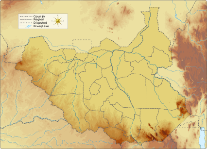

Badingilo National Park spans 8,935 km2 and falls within the Sudano-Guinean biome. Originally established in 1986 for the conservation of black rhino (today it is locally extinct), Badingilo was once renowned for its diversity of large mammals including elephant, buffalo and lion.
On 6 July 2011, three days before South Sudan formally seceded from Sudan, an administrative headquarters was officially opened at a ribbon-cutting ceremony led by Central Equatoria Governor Clement Wani
In August 2022, African Parks signed a 10-year renewable agreement with the government of South Sudan to manage Bandingilo and Boma National Parks.[7] Prior to that the parks were managed by the Ministry of Environment and Forestry, and the Ministry of Wildlife Conservation and Tourism
The 22-year long war between Sudan and South Sudan did not appear to affect the animal populations in the area the park now covers.[8] But the development of the new country became a threat. Additional conflict lasted from around 2013 to 2020. As of 2021, conservationists are unable to monitor the effects to animal populations and habitats.[5] Though a major wildlife preserve, the park lies within a Total S.A. oil concession, potentially exposing it to surveying and drilling
Location of the Park
